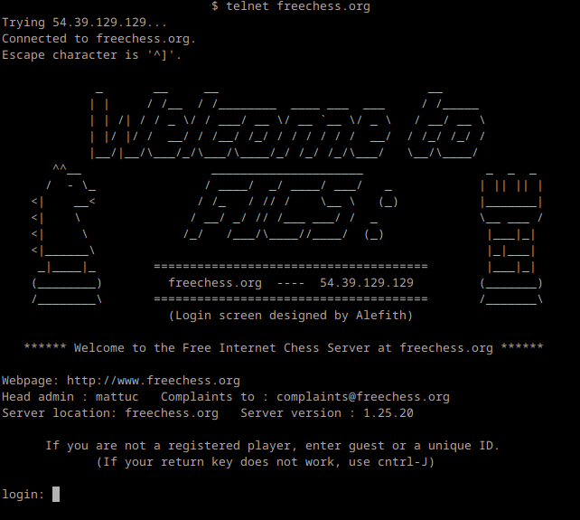

Kaikkea Hauskaa telnetillä
Telnet on alunperin kehitetty tietokoneiden etähallintaan, mutta se on pääosin vaihdettu sshhon sen turvallisuuden takia. Telnetissä kaikki on täysin salaamatonta.
Shakkia telnetillä
Shakkia saa helposti pelattua telnetillä kun yhdistää freecheessin servuun. komento on: telnet freechess.org
Se kysyy nimeä ja tässä tapauksessa käytän nimeä "guest" testatakseni tätä. kirjoita nimi ja paina enteriä.
sitten se kysyy yhdistetäänkö ja paina sillon entteriä.
Pian jokin varmaan tulee ehdottamaan peliä ja silloin
pitää kirjoittaa mitä tämä pyytää eli tässä tapauksessa "play 50"
Kuten kuvassa näkyy niin siirrot tehdään kirjoittamalla ensin isolla nappula eli tässä tapauksessa "P" ja sen jälkeen minne siirretään eli tässä tapauksessa a5 ja siitä tuli Pa5. Servulta pääsee pois kirjoittamalla "exit"
Karttoja (mapscii)
Tällä kertaa pitää tehä tää: telnet mapscii.me
Kartta toimii samalla tavalla kuin esim. google maps. Pois
pääsee painamalla q-kirjainta.